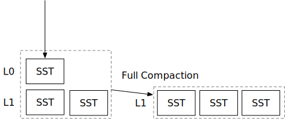

压缩实现

在本章中，您将：
- 实现压缩逻辑，将一些文件合并并生成新文件。
- 实现更新 LSM 状态和管理文件系统上 SST 文件的逻辑。
- 更新 LSM 读取路径以结合 LSM 层级。
要将测试用例复制到启动代码并运行它们，
cargo x copy-test --week 2 --day 1
cargo x scheck
在阅读本章之前，查看第 2 周概览可能会有所帮助，以便对压缩有一个总体了解。
任务 1：压缩实现
在这个任务中，您将实现执行压缩的核心逻辑——将一组 SST 文件合并排序为一个有序运行。您需要修改：
src/compact.rs
具体来说，force_full_compaction 和 compact 函数。force_full_compaction 是决定要压缩哪些文件并更新 LSM 状态的压缩触发器。compact 执行实际的压缩任务，合并一些 SST 文件并返回一组新的 SST 文件。
您的压缩实现应获取存储引擎中的所有 SST，通过使用 MergeIterator 对它们进行合并，然后使用 SST 构建器将结果写入新文件。如果文件太大，您需要拆分 SST 文件。压缩完成后，您可以更新 LSM 状态，将所有新的有序运行添加到 LSM 树的第一层。并且，您需要移除 LSM 树中未使用的文件。在您的实现中，您的 SST 应仅存储在两个地方：L0 SST 和 L1 SST。也就是说，LSM 状态中的 levels 结构应仅有一个向量。在 LsmStorageState 中，我们已经初始化 LSM 在 levels 字段中具有 L1。
压缩不应阻塞 L0 刷新，因此您在合并文件时不应该获取状态锁。您应该仅在压缩过程结束时更新 LSM 状态时获取状态锁，并在修改状态后立即释放锁。
您可以假设用户会确保系统中只有一个压缩任务在运行。放入第 1 层的 SST 应按其第一个键排序，并且不应有重叠的键范围。
剧透：压缩伪代码
#![allow(unused)] fn main() { fn force_full_compaction(&self) { let ssts_to_compact = { let state = self.state.read(); state.l0_sstables + state.levels[0] }; let new_ssts = self.compact(FullCompactionTask(ssts_to_compact))?; { let state_lock = self.state_lock.lock(); let state = self.state.write(); state.l0_sstables.remove(/* 被压缩的那些 */); state.levels[0] = new_ssts; // 新 SST 添加到 L1 }; std::fs::remove(ssts_to_compact)?; } }
在您的压缩实现中，您目前只需处理 FullCompaction，其中任务信息包含您需要压缩的 SST。您还需要确保 SST 的顺序正确，以便最新版本的键将放入新的 SST 中。
因为我们总是压缩所有 SST，如果我们发现一个键的多个版本，我们可以简单地保留最新的一个。如果最新版本是一个删除标记，我们不需要在生成的 SST 文件中保留它。这不适用于接下来的几章中的压缩策略。
有一些事情您可能需要考虑。
- 您的实现如何处理与压缩并行的 L0 刷新？（在执行压缩时不获取状态锁，还需要考虑在压缩进行时产生的新 L0 文件。）
- 如果您的实现在压缩完成后立即移除原始 SST 文件，这会在系统中引起问题吗？（通常在 macOS/Linux 上不会，因为操作系统在没有任何文件句柄被持有之前不会实际删除文件。）
任务 2：Concat 迭代器
在这个任务中，您需要修改，
src/iterators/concat_iterator.rs
现在您已经在系统中创建了有序运行，可以对读取路径进行简单的优化。您并不总是需要为您的 SST 创建合并迭代器。如果 SST 属于一个有序运行，您可以创建一个 concat 迭代器，简单地按顺序迭代每个 SST 中的键，因为一个有序运行中的 SST 不包含重叠的键范围，并且它们按其第一个键排序。我们不想提前创建所有 SST 迭代器（因为这将导致一个块读取），因此我们只在这个迭代器中存储 SST 对象。
任务 3：与读取路径集成
在这个任务中，您需要修改，
src/lsm_iterator.rs
src/lsm_storage.rs
src/compact.rs
现在我们有了 LSM 树的两层结构，您可以更改读取路径以使用新的 concat 迭代器来优化读取路径。
您需要更改 LsmStorageIterator 的内部迭代器类型。之后，您可以构造一个合并 memtables 和 L0 SST 的合并迭代器，以及另一个合并该迭代器与 L1 concat 迭代器的合并迭代器。
您还可以更改您的压缩实现以利用 concat 迭代器。
您需要为 concat 迭代器实现 num_active_iterators，以便测试用例可以测试您的实现是否使用了 concat 迭代器，并且它应该始终为 1。
要交互式测试您的实现，
cargo run --bin mini-lsm-cli-ref -- --compaction none # 参考解决方案
cargo run --bin mini-lsm-cli -- --compaction none # 您的解决方案
然后，
fill 1000 3000
flush
fill 1000 3000
flush
full_compaction
fill 1000 3000
flush
full_compaction
get 2333
scan 2000 2333
测试您的理解
- 读取/写入/空间放大的定义是什么？（这在概览章节中有所涉及）
- 准确计算读取/写入/空间放大有哪些方法，估计它们有哪些方法？
- 即使用户请求删除键，键也会占用一些存储空间，这是正确的吗？
- 考虑到压缩会占用大量写入带宽和读取带宽，并可能干扰前台操作，推迟在有大量写入流量时进行压缩是一个好主意。在这种情况下，甚至有益于停止/暂停现有的压缩任务。您对此有何看法？（阅读 SILK: Preventing Latency Spikes in Log-Structured Merge Key-Value Stores 论文！）
- 使用/填充块缓存进行压缩是一个好主意吗？还是在压缩时完全绕过块缓存更好？
- 在系统中有一个
struct ConcatIterator有意义吗？ - 一些研究人员/工程师提议将压缩卸载到远程服务器或无服务器 lambda 函数。这样做的好处是什么，可能的挑战和性能影响是什么？（考虑压缩完成时会发生什么，以及下一个读取请求对块缓存的影响...）
我们不提供这些问题的参考答案，欢迎在 Discord 社区中讨论。
我们非常欢迎您的反馈。欢迎加入我们的Discord社区。发现问题？请在github.com/skyzh/mini-lsm上创建问题/拉取请求。版权所有 © 2022 - 2024 Alex Chi Z. 保留所有权利。